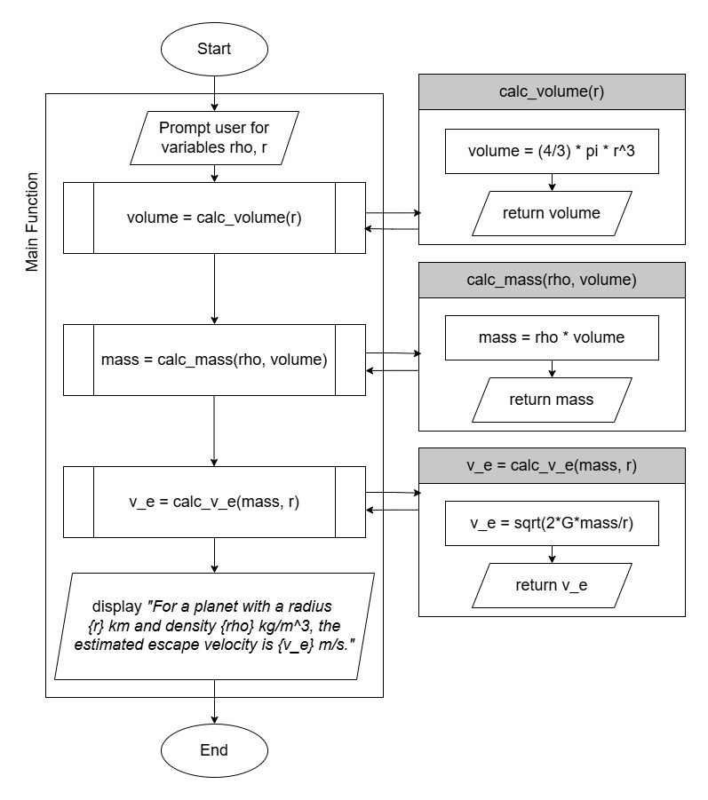

Sep 09, 2026 | 1194 words | 12 min read
9.3.1. PY: Logic and Modularity#
In This Assignment#
Apply logical decision-making using
if,elif, andelsestatements to solve real-world engineering problems.Validate and manage user input to ensure accurate and reliable program behavior.
Translate written problem statements and flowcharts into functional Python code.
Develop and implement user-defined functions (UDFs) to modularize and organize your program.
Use branching logic to route program flow between multiple modular components (a menu-driven design).
Perform engineering calculations using mathematical formulas and appropriate units.
Practice professional programming standards, including commenting, readability, and structure.
Test and debug your code using provided cases to verify correctness.
Learning Objectives#
- PR01:
Programming Standards - Develop code that follows established programming standards and conventions.
- PR02:
Data Storage - Store and access data appropriately.
- PR03:
Calculations - Perform algebraic, array, relational, and logical operations using a programming language. Effectively utilize built-in functions.
- PR04:
Modular Programming - Create and use modular code components, including scripts and user-defined functions.
- PR05:
Code Structures - Understand and write sequential and non-sequential code structures to achieve a programming objective.
- PR06:
Translate Program Descriptions - Translate written descriptions or flowcharts into working code.
- PR07:
Test Cases and Tracking - Test and track information through flowcharts and programs.
- PR08:
Debugging - Debug and refine code so that it achieves its objective without dynamic or semantic errors.
Q1 A Field Engineer’s Toolkit#
Background#
You are a junior engineer supporting two very different projects this week. In the morning, a local farmer needs help figuring out whether her irrigation system is watering correctly. In the afternoon, you’re consulting on a hypothetical mission to escape a mystery planet, and you need to estimate the escape velocity required to get home.
Rather than writing two separate scripts, your supervisor asks you to build a one command-line toolkit: a single Python program that presents the user with a menu, then routes them to the correct modular function based on their choice. This is exactly how real engineering software is organized – one entry point and many well-defined, reusable functions underneath.
Your task is to write a single Python program that:
Asks the user which tool they’d like to use (irrigation check or escape velocity calculator).
Uses
if-elif-elselogic to route to the correct user-defined function (UDF) based on that choice.Validates inputs to prevent nonsense values.
Implements the irrigation decision logic and the escape velocity calculation as separate, well-organized UDFs.
You’ll also sketch a single flowchart showing the full decision path – from the initial menu choice down through each branch.
Files Needed#
Download the Python template
ENGR131_Python_Template.py and
save it as 9.3.1_username.py.
Note
Remember to include comments in your python script to practice professional programming standards. Since this program has multiple UDFs, use clear function names and docstrings so a reader can tell what each function does at a glance.
Program Requirements#
Part 2 – Irrigation Decision UDF#
Write a function that:
Prompts the user for:
Soil moisture (unit: percentage; float, 0 to 60)
Forecasted rain (unit: mm; float, 0 to 50)
Low pressure (yes/no)
Maintenance needed (yes/no)
Validates input:
If a numeric input is outside the expected range, print a warning message and
returnto end the function early.If a yes/no input is something other than “yes” or “no”, print a warning and treat it as “no” by default.
Hint
When a user inputs “yes” or “no,” it’s possible they could capitolize their input or type in all caps. Formatting this user input to lowercase before validation will help avoid errors.
Follows this decision order:
If maintenance is required, print “DO NOT IRRIGATE - maintenance required.”
Else if the system is experiencing low pressure, print “DO NOT IRRIGATE - low pressure condition.”
Else if forecasted rain is 10 mm or more, print “DELAY - significant rainfall expected.”
Else if soil moisture is less than 20%, print “RUN FULL” to indicate the irrigation system will output the normal amount needed.
Else if soil moisture is greater than or equal to 20% and less than or equal to 25%, print “RUN REDUCED” to indicate the system will output less water than normal.
Otherwise (soil moisture greater than 25%), print “SKIP - soil moisture is adequate.”
Part 3 – Escape Velocity UDFs#
As the scripts and programs we write become more complex, we often do not want to put
all of our code directly in the main function. Python allows users to easily write
their own functions in order to modularize their programs; these are called user-defined
functions (UDFs).
Break the calculation for escape velocity into multiple UDFs, for example: a function to compute planet volume, a function to compute planet mass, and a function to compute escape velocity – each calling the next as shown in the flowchart in Fig. 9.1.
Using the following initial conditions, your program should prompt for and compute the escape velocity:
\(\rho\) \(({\kilo\gram}/{\meter^3})\) |
\(r\) \(({\meter})\) |
|---|---|
5513.0 |
6371000 |
1879.8 |
2574730 |
The escape velocity of the projectile is given by:
Where
\(v_e\) is the escape velocity
\(G\) is the gravitational constant (\(6.6743\times10^{-11}\))
\(m\) is the mass of the planet
\(r\) is the radius of the planet
The mass of the planet is given by:
Where
\(\rho\) is the planet’s average density
\(V\) is the volume
The volume of a sphere is given by (we approximate the planet’s shape to be a sphere):
Where
\(r\) is the radius
Note
Convert the radius from m to km before printing to the terminal. This can be done using simple division in Python.
Prompt text to use:
Use the following text to prompt the user for input:
"Enter the density of the planet (kg/m^3): "
"Enter the radius of the planet (m): "
Your program output should format the value for escape velocity to two decimal places.

Fig. 9.1 Flowchart for Individual Assignment#
Hint
The flowchart includes multiple UDFs on both branches. Be sure every UDF shown in the
flowchart appears in your Python program, and that main only orchestrates – it should
not contain the detailed logic itself.
Use the sample output section below to verify that your program outputs correct values.
Sample Output#
Use the values in Table 9.5 below to test your program.
Case |
Menu choice |
Input 1 (Soil moisture / Density) |
Input 2 (Rain forecast / Radius) |
Input 3 (Low pressure) |
Input 4 (Maintenance) |
|---|---|---|---|---|---|
1 |
1 |
15 |
0 |
no |
yes |
2 |
1 |
5 |
23 |
yes |
no |
3 |
1 |
15 |
23 |
no |
no |
4 |
1 |
15 |
0 |
no |
no |
5 |
2 |
5513.0 |
6371000 |
||
6 |
2 |
1879.8 |
2574730 |
Ensure your program’s output matches the provided samples exactly. This includes all characters, white space, and punctuation. In the samples, user input is highlighted like this for clarity, but your program should not highlight user input in this way.
Case 1 Sample Output
$ python3 py2_ind_1_username.py Select a tool: 1) Irrigation System Check 2) Escape Velocity Calculator Enter choice (1 or 2): 1 Enter soil moisture (%, 0-60): 15 Enter forecasted rain (mm, 0-50): 0 Is the system experiencing low pressure? (yes/no): no Is maintenance needed? (yes/no): yes
DO NOT IRRIGATE - maintenance required.
Case 2 Sample Output
$ python3 py2_ind_1_username.py Select a tool: 1) Irrigation System Check 2) Escape Velocity Calculator Enter choice (1 or 2): 1 Enter soil moisture (%, 0-60): 5 Enter forecasted rain (mm, 0-50): 23 Is the system experiencing low pressure? (yes/no): yes Is maintenance needed? (yes/no): no
DO NOT IRRIGATE - low pressure condition.
Case 3 Sample Output
$ python3 py2_ind_1_username.py Select a tool: 1) Irrigation System Check 2) Escape Velocity Calculator Enter choice (1 or 2): 1 Enter soil moisture (%, 0-60): 15 Enter forecasted rain (mm, 0-50): 23 Is the system experiencing low pressure? (yes/no): no Is maintenance needed? (yes/no): no
DELAY - significant rainfall expected.
Case 4 Sample Output
$ python3 py2_ind_1_username.py Select a tool: 1) Irrigation System Check 2) Escape Velocity Calculator Enter choice (1 or 2): 1 Enter soil moisture (%, 0-60): 15 Enter forecasted rain (mm, 0-50): 0 Is the system experiencing low pressure? (yes/no): no Is maintenance needed? (yes/no): no
RUN FULL
Case 5 Sample Output
$ python3 py2_ind_1_username.py Select a tool: 1) Irrigation System Check 2) Escape Velocity Calculator Enter choice (1 or 2): 2 Enter the density of the planet (kg/m^3): 5513.0 Enter the radius of the planet (m): 6371000
---Calculator Results--- Planet radius: 6371.00 km Escape velocity: 11185.72 m/s
Case 6 Sample Output
$ python3 py2_ind_1_username.py Select a tool: 1) Irrigation System Check 2) Escape Velocity Calculator Enter choice (1 or 2): 2 Enter the density of the planet (kg/m^3): 1879.8 Enter the radius of the planet (m): 2574730
---Calculator Results--- Planet radius: 2574.73 km Escape velocity: 2639.67 m/s
Part 4 – Flowchart#
Create a single flowchart that shows your program’s full decision path: the initial menu choice, followed by both branches (irrigation logic and escape velocity calculation), including each UDF call.
We recommend using https://app.diagrams.net/ to design and export your flowchart as a PDF file named “py2_ind_1_flowchart_USERNAME.pdf.”
Q2 Analysis Questions#
Copy and paste the following analysis questions in a MS Word document. After writing your answers, save the document as a PDF file (“py2_ind_1_analysis_USERNAME.pdf”) and submit.
How do you think the Python program you wrote could be made more efficient?
How is the context of each tool (irrigation check vs. escape velocity) important to how you designed its inputs, validation, and outputs?
What are the benefits of organizing two unrelated tools into one program with a menu, compared to writing two separate scripts? What are the drawbacks?
Deliverables#
Submit your python file 9.3.1_username.py, flowchart, and analysis questions to 9.3.1 PY: Logic and Modularity on Gradescope.